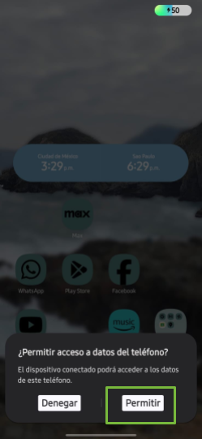
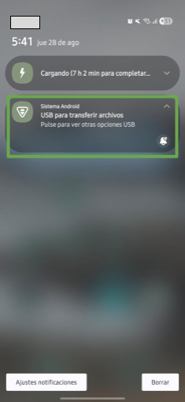
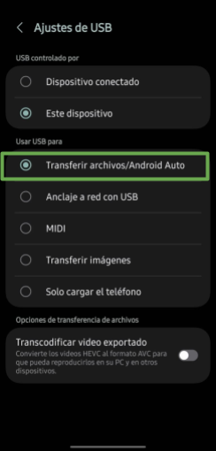
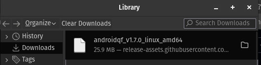
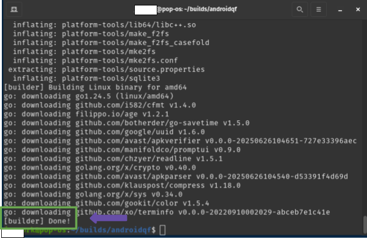
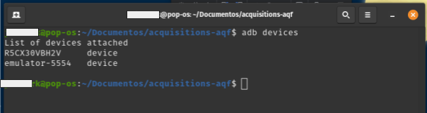
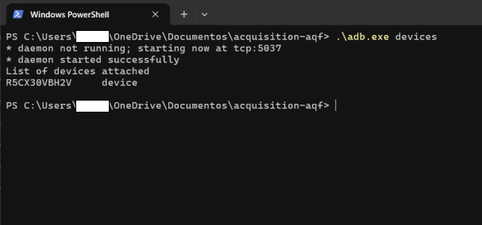
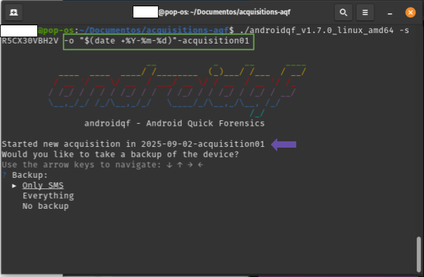
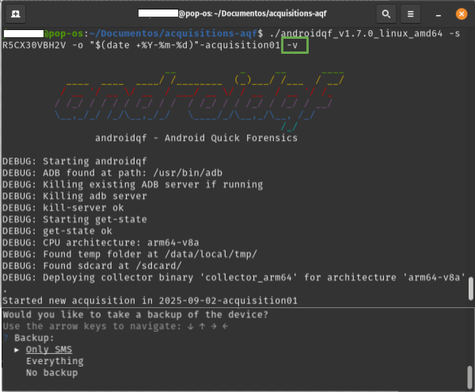
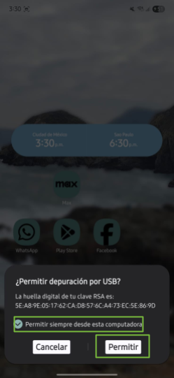

Tutorial – Exploring AndroidQF for forensic acquisition on Android devices
This document is part of a technical documentation repository aimed at building a proven, flexible, and accessible knowledge base to promote consent-based digital forensics in support of civil society. To organize all contents we use the technical documentation framework Diátaxis.
This resource falls within the tutorials category and provides guided practical activities to become familiar with the forensic extraction tool AndroidQF.
The goal of this hands-on tutorial is to teach how to use AndroidQF to perform forensic extractions on Android devices, highlighting its usefulness in device analysis and incident response scenarios in support of human rights defenders, journalists, and civil society organizations.
How to follow this tutorial?
This tutorial is a resource for learning and exploration, so concepts are explored in depth, while also presenting alternatives where possible. If you are looking for a concise, step-by-step guide to complete an extraction, refer to our guide to data acquisition with AndroidQF.
To follow this tutorial, we recommend you set aside at least 90 minutes of dedicated time for the initial exploration, especially if you have no prior experience with the tool.
Requirements to follow this tutorial
To complete this tutorial, you must have the following:
-
An Android device: The device must be functional, and its password, PIN, or unlock pattern must be known. It must also have USB debugging enabled.
How to enable USB debugging?
If the device does not have this configuration enabled, first follow the steps in How to enable developer options on different Android devices, and then follow the guide on how to enable ADB (USB debugging) on different Android devices.
-
A computer running a recent version of Windows, Linux, or macOS.
-
A USB data transfer cable in good condition.
Not all USB cables are the same
Some USB cables lack the internal connections required to transfer data between the mobile device and the computer. This type of cable will work for charging but not for data transfer. For forensic extractions, make sure you use a cable that allows data transfer.
It can be difficult to visually distinguish them, but typically, fast-charging cables or those included with devices tend to support data transfer.
About AndroidQF
AndroidQF is a free and open-source software tool intended to support the forensic extraction of information from Android devices. It is part of the MVT Project, initially developed by Claudio Guarnieri and currently maintained by the Amnesty International Security Lab.
AndroidQF stands for Android Quick Forensics, and its goal is to facilitate the acquisition of information when engaging in consented forensic analysis in civil society contexts.
AndroidQF is a portable tool, meaning it does not need to be installed, and can be executed directly using Windows, Linux, and macOS precompiled binaries.
What does AndroidQF do at a technical level?
Technically, AndroidQF is a forensic wrapper around ADB. This means it automates ADB commands, packaged into modules that execute specific operations following a defined workflow. The main components include:
- Execution interface. Displays a command-line interface for user interaction and logs all activity during execution.
- Module management. Handles the execution flow of each module.
- Forensic extraction. Performs forensic data acquisition using adb commands.
Why is it useful for forensic analysis in civil society?
AndroidQF design allows for quick and secure extractions of Android devices without the need for commercial tools or complex configurations, which makes it an accessible and reliable tool for researchers, human rights defenders, journalists, and digital forensic laboratories.
Some of the key features include:
- It is a portable tool, which means it does not need to be installed.
- Forensic data is managed locally, without relying on any web service or cloud-based storage.
- Its modularity allows users to decide exactly what data to acquire, depending on a person’s level of risk.
- The tool and its documentation fall under the category of free and open-source software, meaning its source code is transparent and can be reviewed by anyone interested in understanding how it works.
- The ability to verify* what forensic information was extracted and how the process was carried out increases transparency and trust, helping to reduce the technical and ethical risks associated with consent-based forensic analysis.
Complementary to this tutorial, we have also published a Dictionary of files generated by the AndroidQF tool, a reference material that provides detailed information each of the files generated, how to use them, where to find specific information, and in what format it can be found.
Reviewing configurations on the Android device
To begin this tutorial, it’s important to confirm that the necessary configurations are properly set both on the Android device and the computer, ensuring a reliable data transmission between devices during the forensic extraction process.
With USB debugging enabled, it’s time to connect the mobile device to the computer using the data transfer cable. When you connect the phone, select Allow when the Android device requests permission to access device data.

Image 1. Screenshot of an Android Samsung device requesting permission to access data.
On the device, verify in the notification panel that the device is connected in USB mode for file transfer (see image 2). To do this, click on the Android System notification and select USB for file transfer/Android Auto (see image 3).

Image 2. Screenshot of the notification panel on an Android device.
If no notification appears, you can check the USB settings in the device’s settings menu and confirm that the file transfer option is enabled.

Image 3. Screenshot of an Android device showing USB settings for file transfer.
Obtaining AndroidQF
This section explains how to download the AndroidQF binary and prepare your computer to run it. Additionally, for those who wish to explore further, this section also includes the steps you need to follow in order to compile your own AndroidQF binary on a Linux system.
Downloading and installing AndroidQF from the official repository
To begin, you’ll need to download the binary of AndroidQF from its official GitHub repository.
It’s important to note that the correct binary depends on your processor architecture and operating system. Below are the details for Windows and Linux/macOS systems.
Availability on Windows
The official AndroidQF repository only provides the Windows binary for amd64 architecture. Therefore, if your Windows system runs on an ARM architecture, you won’t be able to continue with this tutorial unless you have a Linux or macOS system installed or virtualized on your computer.
Open the terminal and type uname -m. The output of this command will show your processor architecture (x86_64 or arm64). Image 4 shows an example on a Linux system.

Image 4. Screenshot of a Linux terminal showing the output of the uname -m command.
Depending on this output, download the corresponding binary from the official AndroidQF repository. Image 5 shows the download list.

Image 5. Screenshot of the AndroidQF download list in the official GitHub repository.
Image 6 shows the downloaded file, in this case version 1.7.0. The version may vary as the tool is updated.

Image 6. Reference image showing the AndroidQF binary version 1.7.0 downloaded for Linux amd64.
Optionally, you can move the downloaded binary to a dedicated folder for the tool or to a folder where you perform forensic extractions, although you can also keep it in your Downloads folder.

Image 7. Screenshot of a Linux terminal running the mv command to move the downloaded binary.
Once the binary is in your preferred folder, you’ll need to grant execution permissions to AndroidQF by using the following command, as shown in image 8:
chmod +x ./androidqf-XXX

Image 8. Screenshot of a Linux terminal running the chmod +x command to add execution permissions to the binary.
As previously mentioned, for Windows operating systems only one binary is available, typically named androidqf_v1.7.0_windows_amd64_signed.exe. To obtain AndroidQF, download this file. Image 9 shows a folder containing the downloaded binary (.exe file).

Image 9. Screenshot of Windows File Explorer showing the folder with the binary where the forensic extraction will be stored.
Optionally, you can move the downloaded binary to a dedicated folder for the tool or to a folder where you perform forensic extractions, although keeping it in your Downloads folder also works.
Antivirus Conflicts
If your Windows or macOS computer has an antivirus installed, it may prevent or block the download and execution of AndroidQF. Therefore, if you encounter issues downloading or running the binary, we recommend temporarily disabling your antivirus. Some antivirus programs may incorrectly flag the AndroidQF binary as a threat and enforce security rules that block its execution.
If you are using Windows Defender, it is not necessary to disable it.
Alternative: Compiling the AndroidQF Binary for Linux
Additionally, this tutorial presents an alternative way to obtain the AndroidQF binary: compiling the source code to produce a binary for Linux. This option allows you to generate the executable file directly on your system, avoiding dependence on the binaries published in the official releases.
This step is not mandatory, but it is useful if you want to understand how to use the source code to build the executable file. If you prefer not to explore compilation, or if you are using a Windows system, you can skip ahead to the section on exploring and running AndroidQF.
Integrity of the AndroidQF Binary
Compiling the project from source code allows you to verify the integrity of the software.
Step 1 - Update the system
Use the package manager to make sure packages are up to date.
sudo apt update && sudo apt upgrade -y
Step 2 - Install the required dependencies
Install Go 1.23, make, git, unzip, and wget. It’s important not to use the Go version included in the system repositories, as it is usually outdated.
If you already have a previous installation, remove it with:
sudo apt remove --purge -y golang-go golang
sudo rm -rf /usr/local/go
Now download and install the official version of Go. In this example, version 1.23 is used, but always download the most recent one.
cd /tmp
wget https://go.dev/dl/go1.23.1.linux-amd64.tar.gz
sudo tar -C /usr/local -xzf go1.23.1.linux-amd64.tar.gz
Add go to the system PATH:
export PATH=/usr/local/go/bin:$PATH
You can then confirm the installed version of Go.
go version
Step 3 - Clone the repository
With the environment ready, clone the official AndroidQF repository from GitHub and navigate into the downloaded folder.
cd ~
git clone https://github.com/mvt-project/androidqf.git
cd androidqf
Step 4 - Compile the binary
Within the project, the first step is to compile the collector module, which is the module that handles the forensic extraction on the device.
make collector
Wait until the collect finishes building up, as shown on image 10.

Image 10. Screenshot of a linux terminal running the command build collector.
Subsequently, the Linux version of AndroidQF is compiled using the command make, as shown in Figure 11.
make linux

Image 11. Screenshot of a linux terminal running the command make linux.
At the end of the compilation, the binaries are generated inside the build folder. You can list the folder and verify the compilation of the binaries with the following command, as shown in Figure 12:
ls build/

Imagen 12. Screenshot of a linux terminal running the command ls build/.
At this point, you have generated the binary file necessary to complete an AndroidQF extraction. In the next section we will explore the tool and confirm the generated binary works properly.
Exploring and running AndroidQF
Exploration of AndroidQF
In this section, we will explore AndroidQF to understand the execution parameters of the tool. Understanding them will allow you to control and customize the type of forensic extraction you want to perform, as these parameters are part of the commands that guide the tool to function correctly.
AndroidQF includes a complete list of available parameters through its --help parameter (or its shorthand -h). This works on Linux, macOS, and Windows using the following command:
./androidqf_vXXX_ --help
Output of help command in Linux:

Image 13. Screenshot of a linux terminal running AndroidQF with the parameter –help.
Output of help command in Windows:
In the folder where you have saved the AndroidQF binary, right-click and select the option "Open in Terminal," as shown in image 14:

Image 14. Screenshot of a Windows folder with the right-click menu open and the Open in Terminal option highlighted
Once in the terminal, you can execute the command with the –help parameter, as shown in image 15.

Image 15. Screenshot of Windows Powershell terminal with the –help parameter executed.
The most important options and parameters for conducting a forensic extraction are:
- -s: If you have multiple devices connected, you can use this parameter to specify which device to analyze.
In the case of macOS and Linux, you can list devices using adb. Here is a guide on How to install ADB on macOS and Linux.
The command to list devices on macOS and Linux is:
adb devices
The result is shown in image 16.

Image 16. Screenshot of Linux terminal with the adb devices command executed
In the case of Windows, when you run the AndroidQF binary for the first time, the ADB executable is created and can be used to list connected devices:
.\adb.exe devices
The result is shown in image 17.

Image 17. Screenshot of Windows PowerShell terminal with the adb executable and devices parameter executed
Once the connected devices are identified, it is possible to add the serial number using the -s parameter, as shown in image 18.
./androidqf -s numero-serial

Imagen 18. Screenshot of a linux terminal with the parameter -s.
-
-o: Allows you to specify an output or destination folder where the extracted files will be saved.
If no output or destination folder is specified, AndroidQF will identify the device once USB debugging is enabled and will generate a folder with a unique identifier (UUID). This folder will store the extraction. The names of these folders, being UUIDs, usually look like 0caba18f-20a7-48d0-b9ba-724fdaa3ff85 or a577ae94-0a47-479c-82c5-c8017bfb7175.
As an example in this tutorial, the ** -o parameter is used to define the output folder for the extraction instead of letting AndroidQF generate a UUID. This way, the command will create a folder with a more readable name, combining the date in year-month-day format with an additional identification text at the end, in this example acquisition01.
./androidqf -s numero-serial -o "$(date +%Y-%m-%d)"-identificador
Image 19. Screenshot of a linux terminal with the parameter -o.
-
--verbose or -v: Optionally, you can enable verbose mode. The terminal will display real-time information about the process, which is useful for debugging. This information is the same as what is saved in the command.log file, which is automatically generated after each execution.
./androidqf -s numero-serial -o "$(date +%Y-%m-%d)"-complemento-opcional -v
Image 20. Screenshot of a linux terminal with the parameter -v.
Running AndroidQF
When you are ready to execute the AndroidQF binary, turn on and unlock the mobile device that you have already connected to your computer.
Regardless of which operating system you use on the computer, it is first necessary prepare the command that we will execute with the correct parameters depending on the analysis needs. In this case, we use the following command:
./androidqf -s numero-serial -o /ruta/de/salida/"$(date +%Y-%m-%d)"-complemento # (1)!
- We use the -s parameter to specify the serial number and -o to indicate the output path. We also use the date command to automatically include the date in the folder name.
To run AndroidQF on a Linux or MacOS system, open a terminal in the location where the binary is stored and execute the command shown above.
./androidqf -s numero-serial -o /ruta/de/salida/"$(date +%Y-%m-%d)"-acquisition01
In image 21, we show an example of the output on a Linux system.

Image 21. Screenshot of Linux terminal with prepared execution command.
You can run AndroidQF on Windows using the terminal or the file explorer.
With your terminal open in the folder where the AndroidQF binary is located, execute the binary using the command with the necessary parameters according to your analysis (similar to the Linux and MacOS case).
./androidqf.exe -s serial-number -o "$(Get-Date -Format 'yyyy-MM-dd')-acquisition01

Image 22. Screenshot of Windows PowerShell terminal with prepared execution command.
In the folder where the binary is saved, you can run it by double-clicking.

Image 23. Screenshot of File Explorer with the folder containing the AndroidQF binary.
Once you execute the binary, a Windows protection message will appear stating that the system prevented the application from running to avoid risks. However, since AndroidQF is a free and open-source tool with constant updates, it is not a commercial distribution.
Click “More info”

Image 24. Screenshot of Windows protection popup.
Select “Run anyway”

Image 25. Screenshot of Windows protection popup with Run anyway selected.
Considerations During Execution
Equivalent steps for all systems
The following steps apply the same way across the three operating systems considered in this tutorial: Linux, Windows, and macOS.
This section covers actions and considerations once execution begins, that is, as soon as we run the command shown in the previous section.
When execution starts, some configurations must be made in the terminal () and others on the Android device (). These configurations are sequential, so it is recommended to stay alert during the extraction process.
-
- On the phone: When the message Allow USB debugging? appears, click “Always allow from this computer” and then “OK” or “Allow”.

Image 26. Screenshot of Android Samsung device requesting debugging and trust permission to transfer files.
-
- In the terminal: AndroidQF will then ask what type of backup it should perform:
- Only SMS: Performs a limited backup including only SMS and MMS messages.
- Everything: Executes a full device backup via adb backup.
- No Backup: Skips backup generation entirely; only extracts other artifacts via ADB.
Note
For this example, we use the Only-SMS option to limit extraction to messages, reducing unnecessary exposure of personal data. If the case context is high-risk or requires more sophisticated investigation, it is recommended to choose Everything, although Only-SMS is sufficient in most cases for detecting phishing attempts via SMS. Please also be aware that the backup function used in this command has been deprecated, and is not used commonly by the majority of applications.

Image 27. Screenshot of Linux terminal with AndroidQF backup menu and Only-SMS selected.
-
- On the phone: When selecting the backup type, the phone will request a temporary password for encryption. In this example, we use the password “sd” (digital security), as shown in figure 28.
About Backup Passwords
At this step, the tool asks for a password to encrypt the backup. In this example, we use "sd" (digital security in Spanish). Depending on the context and the case, you can choose an appropriate password. If extractions are performed continuously, the same password may be used internally by your team.
Although reusing passwords is not recommended in digital security practices, it is important to consider the context. This password protects only one of the files included in the forensic extraction. Other collected files are not encrypted, so regardless of the password used, the extraction folder should be treated as sensitive information and stored only on media with additional protection measures according to your internal policies.

Image 28. Screenshot of Android Samsung device requesting temporary backup password.
-
- On the phone: Next, select the button “Back up my data.”

Image 29. Screenshot of Android Samsung device with “Back up my data” option selected.
In the terminal : At this point, AndroidQF will perform the backup and collect information from the backup and the installed apps (packages) on the device.
Path Errors
Occasionally, errors may appear related to locating package paths, which may show some error markers. However, these errors do not affect the forensic data extraction from the device.

Image 30. Screenshot of Linux terminal showing collection of application package information by AndroidQF.
-
- In the terminal: Once AndroidQF identifies all installed packages, it will ask what type of app copies to perform. There are three options:
- All: Downloads APKs of all applications, including system apps.
- Only non-system packages: Downloads only APKs installed by the user.
- Do not download any: Skips APK download entirely.
The recommendation here is to download only non-system packages to allow later analysis for malicious behavior, modifications, trackers, etc.
Which Option is Ideal?
While we recommend selecting “Only non-system packages,” the choice depends on your analysis focus. For sophisticated attack cases, the “All” option may be used.*

Image 31. Screenshot of Linux terminal with AndroidQF app package copy menu and Only non-system packages selected.
-
- In the terminal: After selecting the package download option, AndroidQF will ask whether to remove APKs signed by developers or trusted entities (like Google or the device manufacturer) to reduce extraction folder size.
Respond “Yes” so that the review can focus on potentially suspicious packages and save time and storage space.
Which Option is Ideal?
While we recommend selecting “Yes,” the choice depends on your analysis focus. For sophisticated attack cases, “No” may be used.

Image 32. Screenshot of Linux terminal with AndroidQF trusted app omission menu and Yes selected.
At this point, multiple acquisition tasks will be performed, such as collecting device properties, system logs, running processes, configurations, temporary files, etc., which will be explained in greater detail in the next section.
Process Duration
This stage may take several minutes or even a few hours, depending on the phone model and amount of stored data. Progress is shown line by line in the terminal and requires no further intervention except at the end, where pressing Enter completes the process.

Image 33. Screenshot of Linux terminal showing correct forensic extraction execution with AndroidQF, prompting to press “Enter” to finish.
Once the acquisition process is complete, the tool will captured the files and key information necessary for a triage.
Verifying the extraction
Once the execution of AndroidQF has finished, it is important to validate that the acquisition was completed successfully. To do this, follow these steps:
-
Review the command.log file
Open the command.log file with a text editor and search for the words WARNING and ERROR to find alerts during the extraction. If matches are found, check whether they correspond to critical failures or non-relevant events.
You can use the grep command to search within the acquisition folder:
grep -i "WARNING\|ERROR" command.logThe output will be in plain text:
2025-07-28T13:05:36-06:00 [ERROR] Failed to get file paths for package com.adobe.reader: exit status 1: 2025-07-28T13:05:55-06:00 [ERROR] Failed to get file paths for package com.whova.event: exit status 1: 2025-07-28T13:07:27-06:00 [ERROR] Failed to get file paths for package im.vector.app: exit status 1: 2025-07-28T13:10:09-06:00 [ERROR] Failed to get file paths for package sh.file.opener.shell.editor.app: exit status 1: 2025-07-28T13:29:51-06:00 [DEBUG] From: /data/system/uiderrors.txt 2025-07-28T13:29:51-06:00 [DEBUG] To: /home/lightyear/Documentos/ST/ST2025/extracciones qf/a7de07b3-36d8-4589-9854-1bc666c2c873/logs/data/system/uiderrors.txt 2025-07-28T13:29:51-06:00 [ERROR] Failed to pull log file /data/system/uiderrors.txt: 2025-07-28T13:29:51-06:00 [ERROR] Failed to pull log file /proc/kmsg: 2025-07-28T13:29:51-06:00 [ERROR] Failed to pull log file /proc/last_kmsg: 2025-07-28T13:29:51-06:00 [ERROR] Failed to pull log file /sys/fs/pstore/console-ramoops: 2025-07-28T13:29:51-06:00 [ERROR] Failed to pull log file /data/anr/: 2025-07-28T13:29:51-06:00 [ERROR] Failed to pull log file /data/anr/anr_2025-07-23-03-47-27-988: 2025-07-28T13:29:52-06:00 [ERROR] Failed to pull log file /data/log/: 2025-07-28T13:30:00-06:00 [ERROR] Failed to pull log file /data/log/settingsprovider.txt: 2025-07-28T13:30:00-06:00 [ERROR] Failed to pull log file /data/log/dark_mode_log0.txt.lck: 2025-07-28T13:30:00-06:00 [ERROR] Failed to pull log file /data/log/dark_mode_log0.txt: 2025-07-28T13:30:00-06:00 [ERROR] Failed to pull log file /data/log/knoxsdk.log.0.lck: 2025-07-28T13:30:00-06:00 [ERROR] Failed to pull log file /data/log/knoxsdk.log.0: 2025-07-28T13:30:00-06:00 [ERROR] Failed to pull log file /data/log/LockSettingsLog_Enroll.log: 2025-07-28T13:30:01-06:00 [ERROR] Failed to pull log file /data/log/setupwizard.txt: 2025-07-28T13:30:01-06:00 [ERROR] Failed to pull log file /data/log/appwidget_history_log0.txt.lck: 2025-07-28T13:30:01-06:00 [ERROR] Failed to pull log file /data/log/appwidget_history_log0.txt: 2025-07-28T13:30:01-06:00 [ERROR] Failed to pull log fileImage 34 shows the search results for errors on a Linux system.

Image 34 Screenshot of Linux terminal with the grep command searching for errors in the command.log file generated by AndroidQF.
Open the file with Notepad. If you are using Windows in Spanish, press Ctrl+B, and if you are using Windows in English or Portuguese, use Ctrl+F. Then type WARNING and ERROR in the search box.
Image 35 shows the output of an error search in Windows. In this case, no errors related to the forensic extraction process are found.

Image 35 Screenshot of Windows Notepad searching for errors in the command.log file generated by AndroidQF.
-
Verify the existence of the acquisition.json file and open it
This file summarizes the details of the extraction. Its creation indicates that AndroidQF successfully completed the forensic extraction of the device.
Example output of the acquisition.json file:
{ "uuid": "a7de07b3-36d8-4589-9854-1bc666c2c873", "androidqf_version": "f77a04f", "storage_path": "/home/user/acquisition/folder qf/a7de07b3-36d8-4589-9854-1bc666c2c873", "started": "2025-07-28T19:02:46.15453512Z", "completed": "2025-07-28T19:30:22.947074074Z", "collector": { "ExePath": "/data/local/tmp/collector", "Installed": false, "Adb": { "ExePath": "/usr/bin/adb", "Serial": "" }, "Architecture": "arm64-v8a" }, "tmp_dir": "/data/local/tmp/", "sdcard": "/sdcard/", "cpu": "arm64-v8a" } -
Check the creation of output files and folders
Ensure that the following files and folders were generated:
- Files
- acquisition.json
- backup.ab
- bugreport.zip
- command.log
- dumpsys.txt
- env.txt
- files.json
- getprop.txt
- hashes.csv
- logcat.txt
- packages.json
- processes.txt
- root_binaries.json
- selinux.txt
- services.txt
- settings_global.txt
- settings_secure.txt
- settings_system.txt
- Output folders
- apks/
- logs/
- tmp/
This means that the modules were executed successfully.

Image 36 Screenshot of the Files application in PopOS! showing the output folder with files and directories generated by the forensic acquisition with AndroidQF.
Identifying that an acquisition was successfully performed involves a process of analysis, skill, and instinct to read lines in different formats and identify all output file names. All your effort helps the community improve these tools for civil society.
Conclusion
Congratulations! You have successfully completed the forensic acquisition process with AndroidQF. Performing a forensic information extraction is not an easy task, but now you master the essential steps to carry out safe, documented, and consented extractions. **AndroidQF will allow you, as an analyst, to support investigations into Android devices ** from your laboratory, organization, or cause if you are an independent analyst working on surveillance, digital threats, and documentation of incidents or digital attacks. Your new skills are crucial to reinforcing the use of these tools for the benefit of many communities and civil society.
Now that you have the extraction, the next step is to interpret the obtained information, because once an extraction has been successfully completed, it is necessary to begin a process of analyzing the information contained within it.
To support this analysis, this repository includes a key reference resource: the Dictionary of Files Generated by AndroidQF. With this resource, you will be able to:
- Identify the content of each output file.
- Understand why this information is important and how to use it in a forensic analysis.
- Understand the format in which the information is delivered and how to visualize it.
The next step is to conduct a deeper analysis of the acquired information.